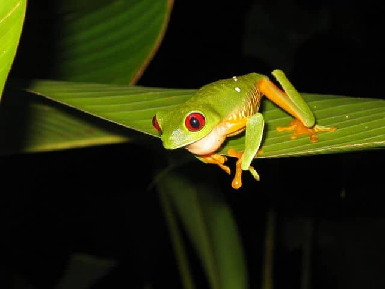
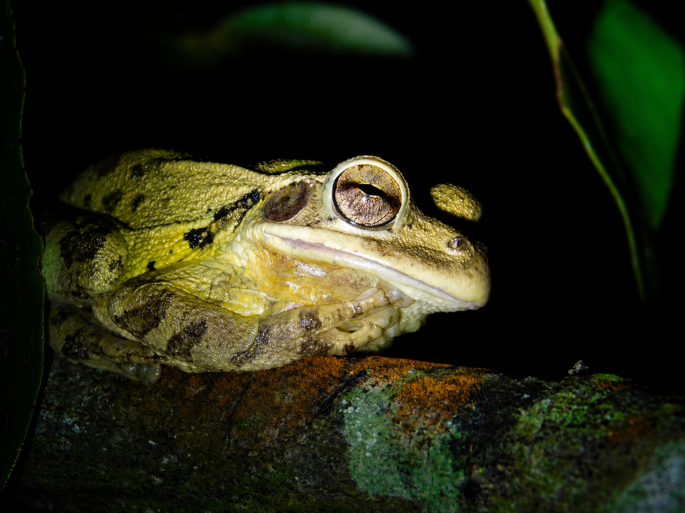
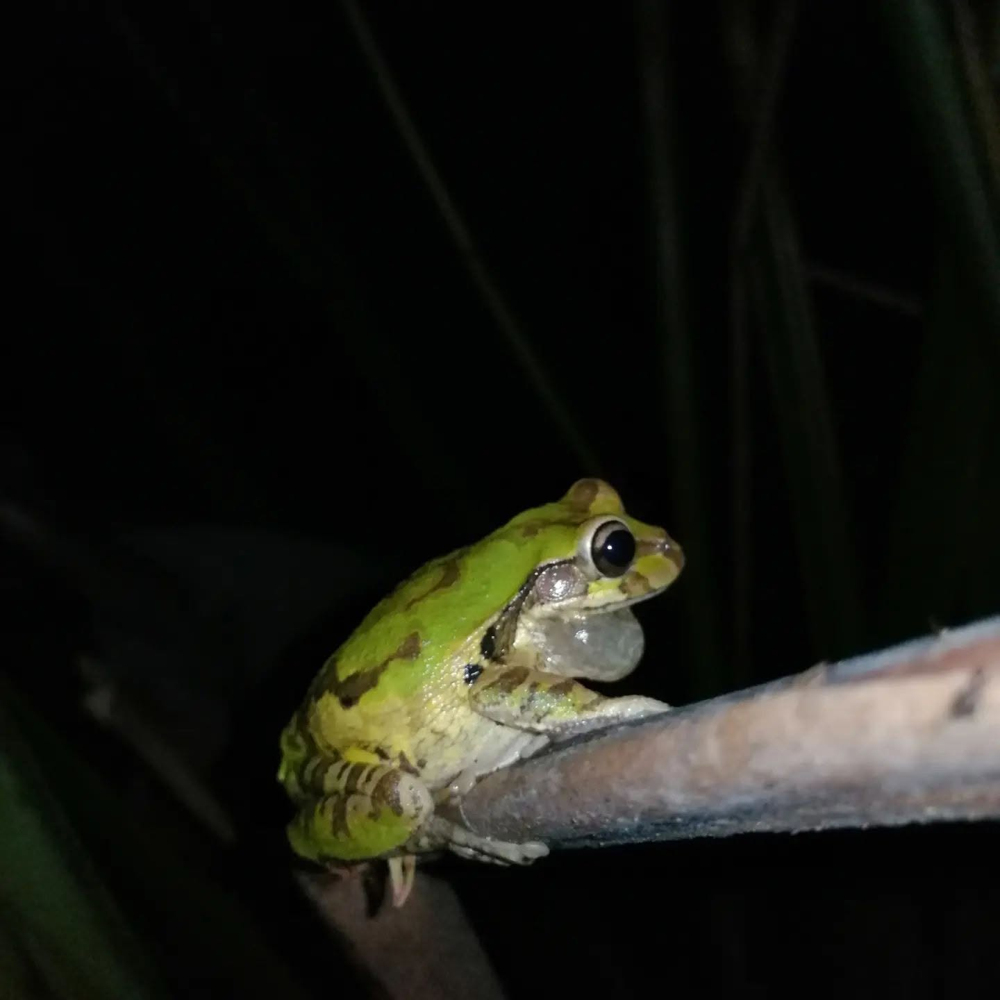
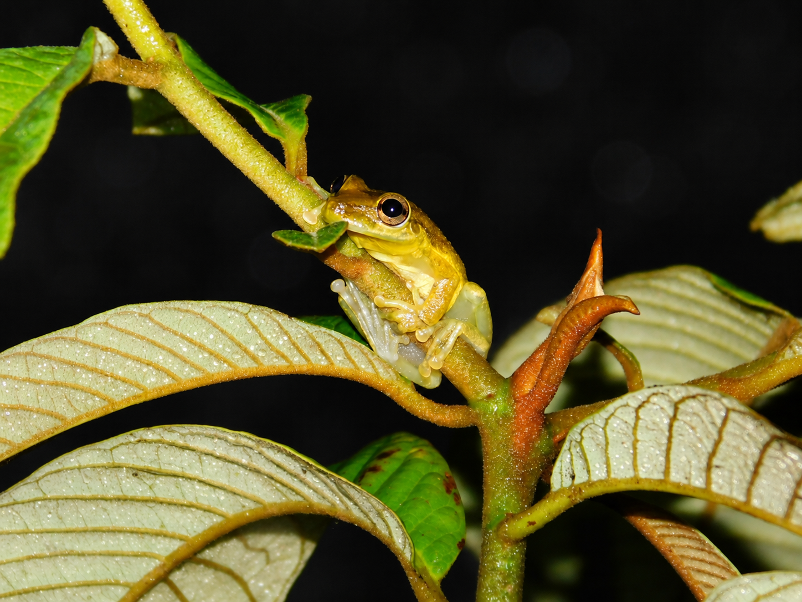
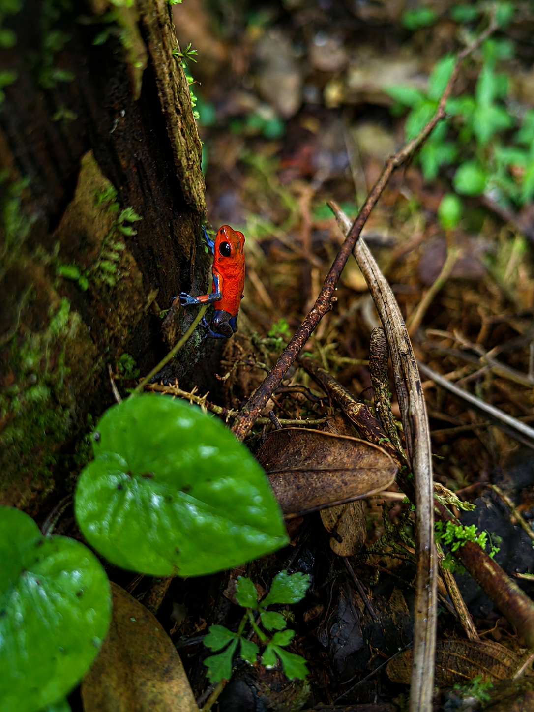

Dependencia del agua
Su piel permeable las hace muy sensibles a la calidad y humedad del entorno donde viven.
Ranas y sapos habitan la vegetación húmeda y los cuerpos de agua del refugio, revelando con su presencia el buen estado de salud de este humedal.
Caño Negro, Los Chiles, Alajuela
Cada una de estas ranas depende de ambientes húmedos y saludables, por lo que su presencia refleja directamente el estado ecológico de Caño Negro.
Su piel permeable las hace muy sensibles a la calidad y humedad del entorno donde viven.
La mayoría son más activas al anochecer, cuando salen a alimentarse y reproducirse entre la vegetación.
Cumplen un papel clave en el equilibrio del ecosistema al alimentarse de insectos y otros pequeños invertebrados.
Proteger la vegetación y el agua del refugio es indispensable para la supervivencia de estas especies.

Es una de las ranas más reconocidas de Costa Rica, con sus llamativos ojos rojos, costados azules y dedos anaranjados.
Pasa el día inmóvil y camuflada sobre hojas anchas, y se activa durante la noche para alimentarse de insectos.
Sus ojos rojos funcionan como un mecanismo de defensa: al abrirlos de golpe frente a un depredador, lo sorprende y gana segundos valiosos para escapar.

Es una rana arborícola robusta, de piel granulosa y tonos que van del café al amarillo verdoso según su estado de ánimo o el ambiente.
Se refugia en huecos de árboles y bromelias durante el día, y desciende por la noche para alimentarse cerca de charcas temporales.
Su nombre viene de la secreción blancuzca y pegajosa que libera por la piel cuando se siente amenazada, una defensa contra depredadores.

Se distingue por sus grandes ojos oscuros y su piel verde jaspeada, que le permite mimetizarse entre hojas y ramas del bosque húmedo.
Como muchas ranas arborícolas nocturnas, permanece quieta durante el día y se activa al caer la noche cerca de cuerpos de agua tranquilos.
Sus ojos grandes le dan una visión nocturna muy sensible, clave para detectar presas e identificar depredadores en la oscuridad del bosque.

Habita el follaje bajo y medio del bosque, donde sus discos adhesivos en los dedos le permiten sujetarse a hojas y ramas lisas.
Se reproduce en charcas temporales y vegetación cercana al agua, aprovechando la humedad constante del humedal.
Los discos adhesivos en la punta de sus dedos funcionan como pequeñas ventosas, lo que le permite trepar incluso sobre superficies lisas y verticales.

Pequeña y de color rojo intenso con patas azules, es una de las ranas más fotografiadas del refugio gracias a su coloración llamativa.
Es activa durante el día y suele encontrarse en la hojarasca del suelo del bosque, cerca de troncos húmedos.
Su color intenso es una advertencia real: su piel produce toxinas que la protegen de buena parte de sus depredadores naturales.
Descubre a los anfibios de Caño Negro, indicadores vivos de la salud del agua y la vegetación que sostienen todo el refugio.
Se ubica en Los Chiles, Alajuela, Costa Rica, cerca de la frontera con Nicaragua.
Puedes acceder por la Ruta 138 desde Upala o Los Chiles. Usa el botón de ubicación para ver la ruta.
Más de 300 especies de aves, además de reptiles, mamíferos y una gran diversidad de flora.
Durante la estación seca para senderismo, o época lluviosa para ver aves migratorias.
Ropa cómoda, repelente, agua, cámara y protección solar.
Cambiando idioma...